KAMIS
Amaterasu
Sin precio · diseño conceptualVer sus vistas ↗
KAMIS / 18
Una colección de 18 kamis del sintoísmo: Amaterasu, Susanoo, Raijin, Fujin y muchos más. Los dioses de Japón en resina gris, sin piezas mecánicas. Se publican poco a poco: ya hay 18.


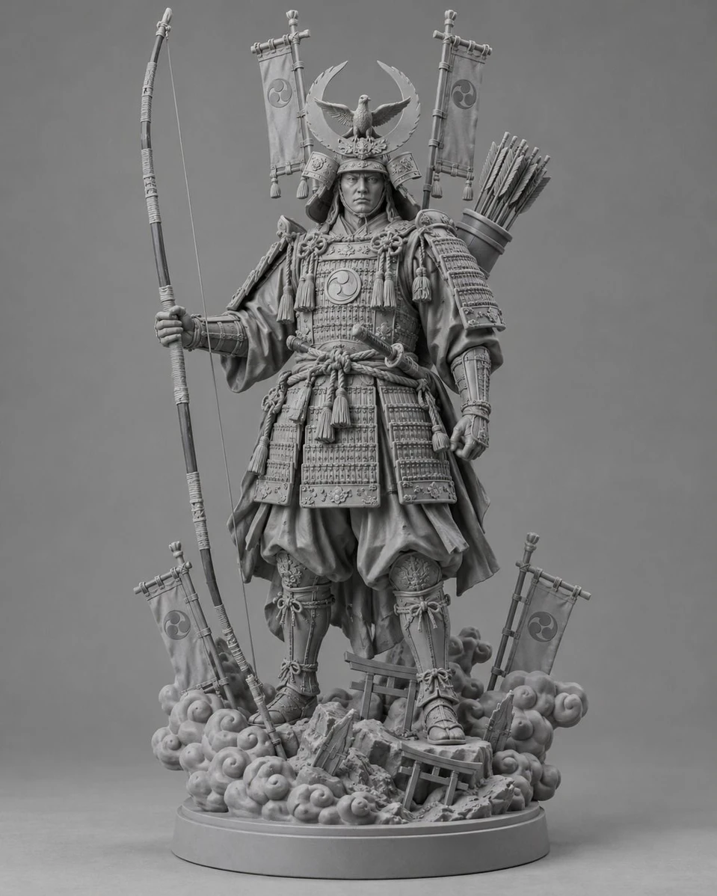
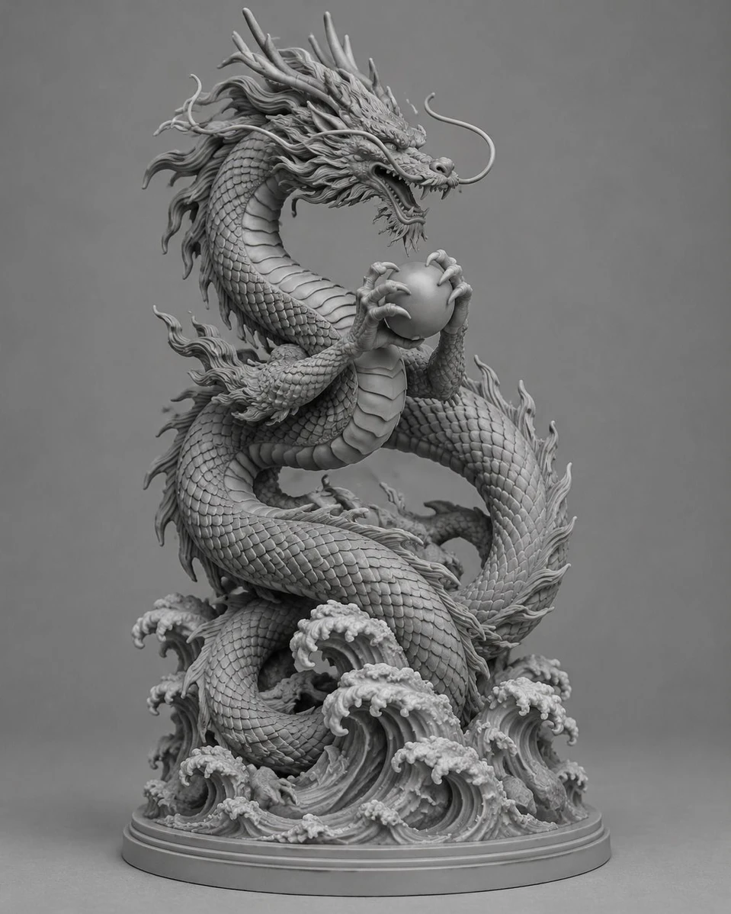
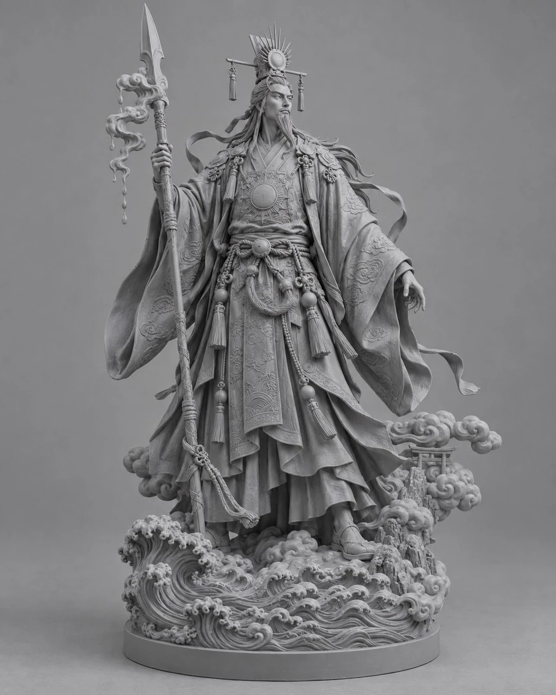
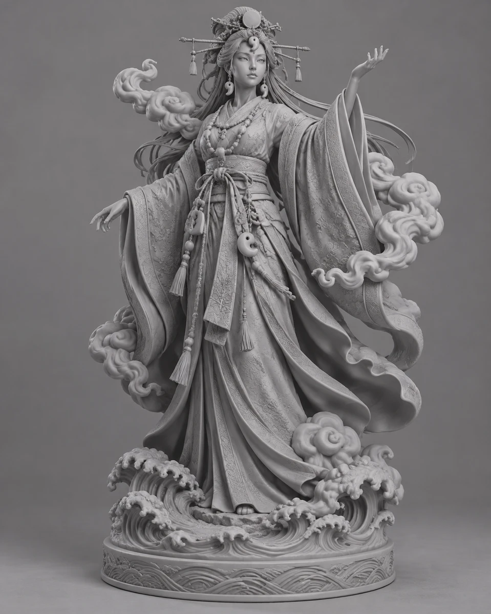
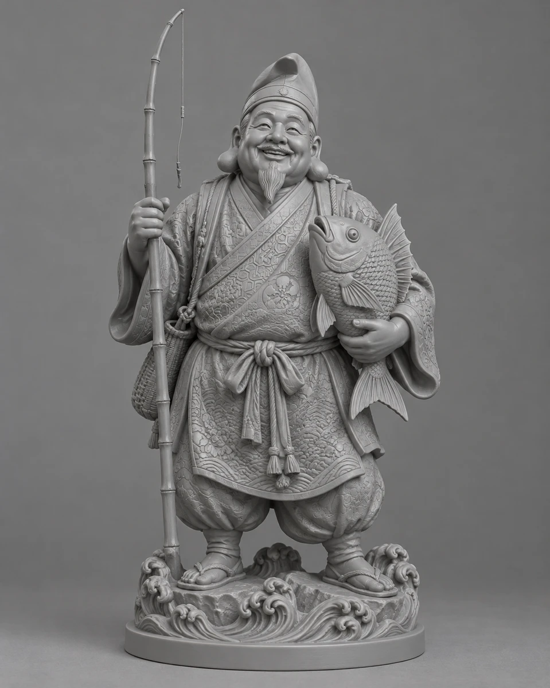
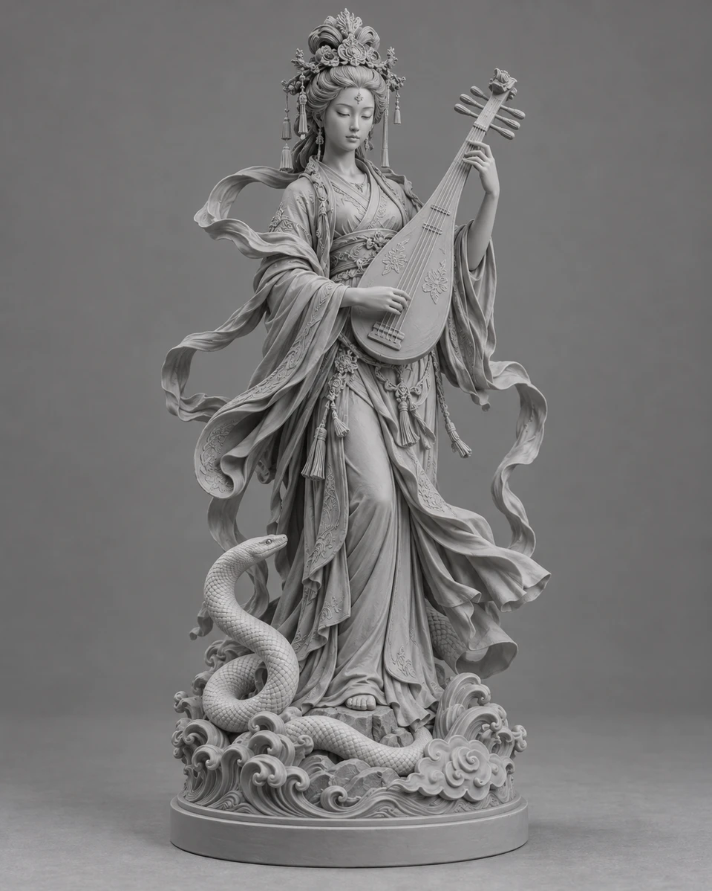
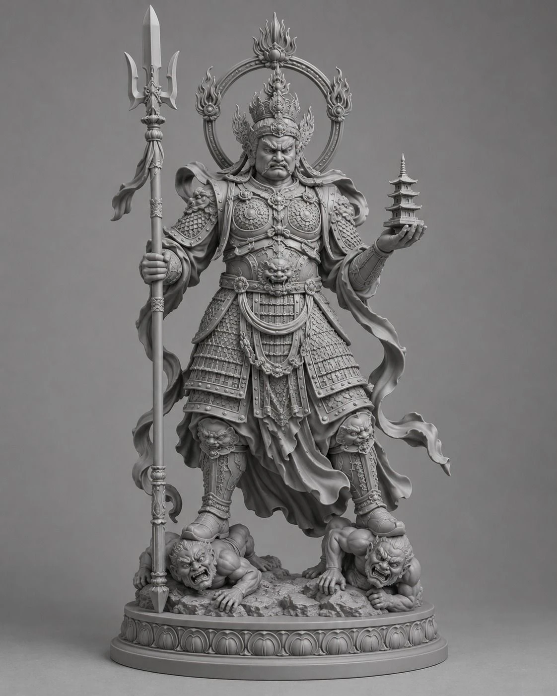
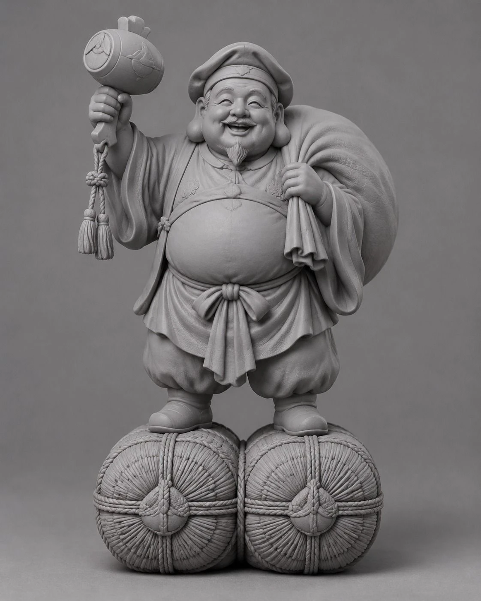
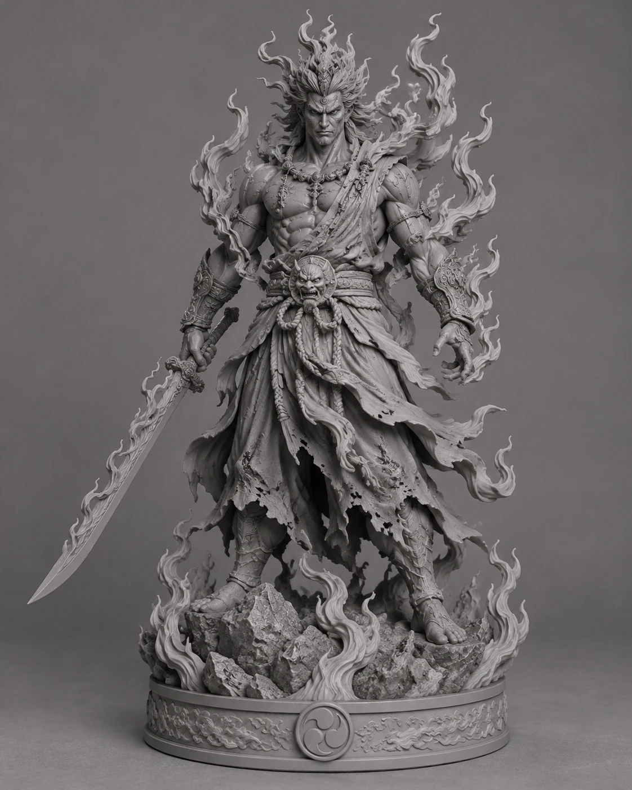
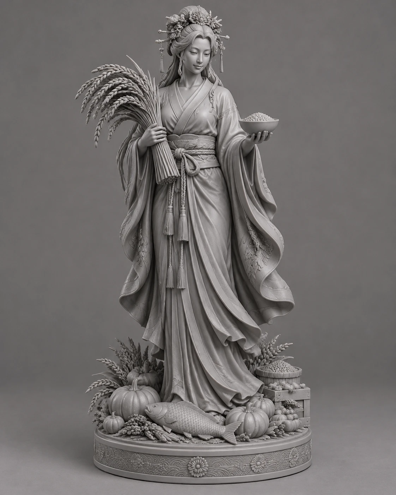
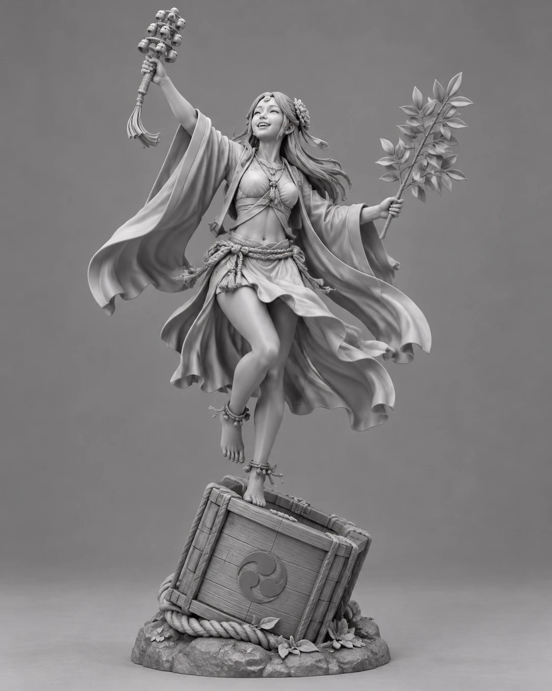